A Tour of the kinvicalc Shiny App
kinvicalc_app_tour.RmdWho this vignette is for
kinvicalc ships with a Shiny app
(run_app()) that lets a lab operator record kinematic
viscosity measurements, check them against ASTM D445-26 precision
limits, and maintain a registry of viscometers, all without writing any
R code. This vignette walks through the app screen by screen, following
one sample from an empty registry through to a locked, reportable
result. It complements the updating_precision_values
vignette, which covers changing the ASTM limits the app checks against,
and the kinvicalc-workflows
vignette, which shows the same workflow driven from R directly.
Launch the app from an R console with:
This opens in your default web browser (or the Viewer pane in RStudio/ Positron). The app has three tabs: Calculation, Reporting, and Viscometers. The tour below visits them in the order a new lab would typically use them: register a viscometer first, then run and lock a sample result, then review the locked results table.
Step 1: Register a viscometer
Before any sample can be measured, the viscometer used for the test must be in the local registry. Open the Viscometers tab. On a fresh installation, the maintenance form and the results table below it are both empty:
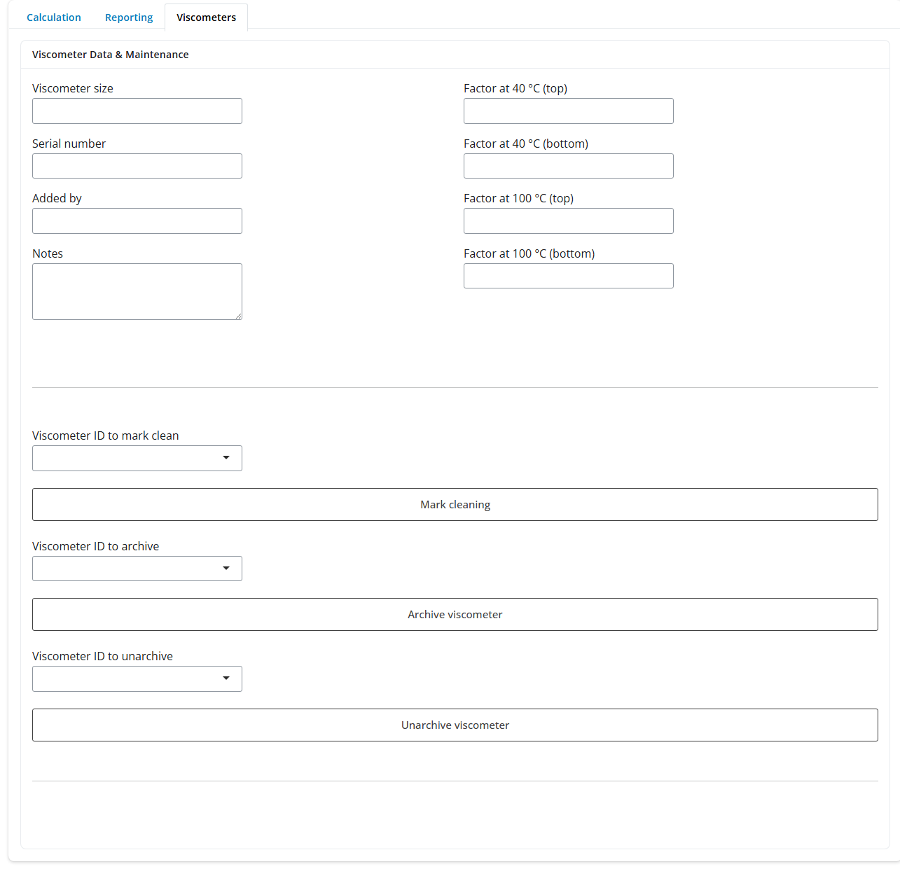
Fill in the viscometer’s size, serial number, and its four
calibration factors (top and bottom bulb, at 40 C and 100 C, taken from
the viscometer’s certificate). As you type the size and serial number,
the app previews the canonical NNN-NNNNN viscometer ID it
will use as the primary key:
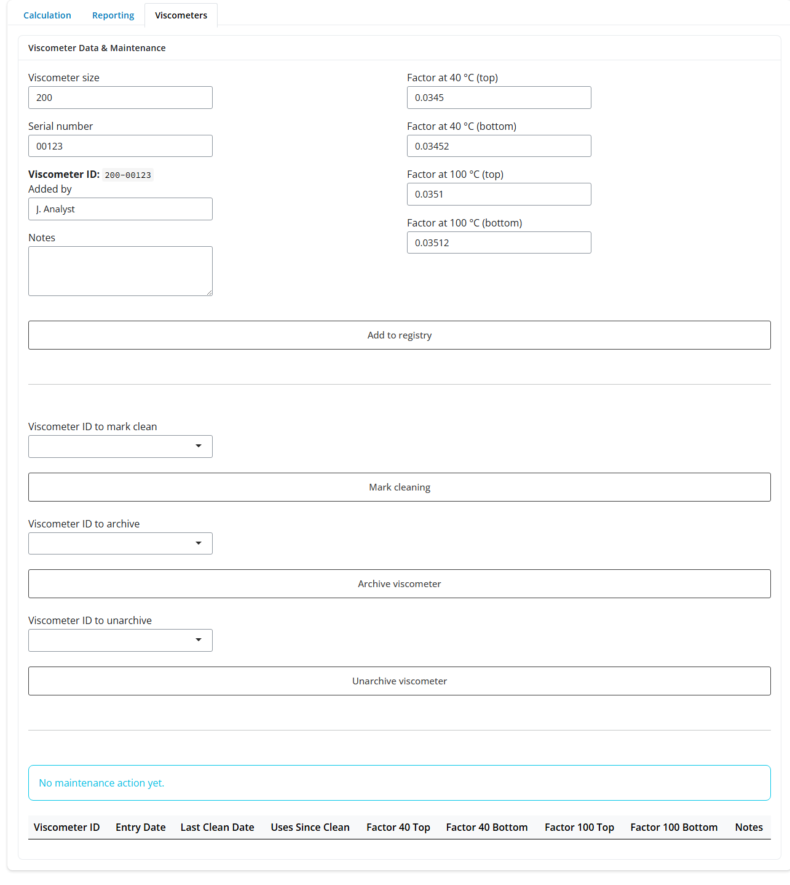
Clicking Add to registry stores the viscometer and immediately reflects it in the table at the bottom of the tab, along with an entry timestamp and a use counter that starts at zero:
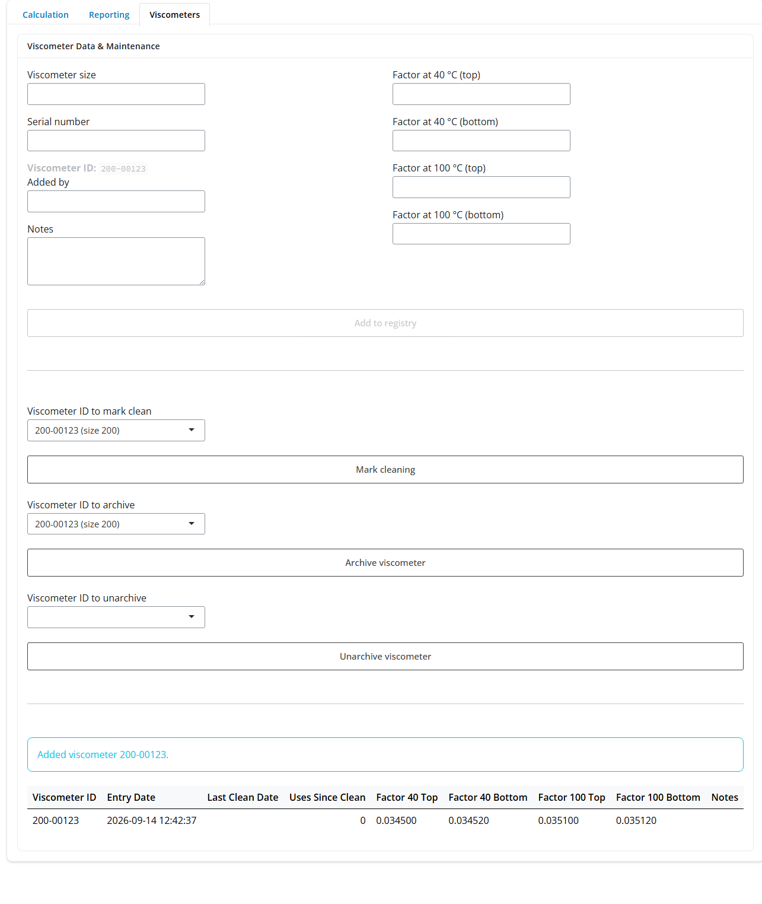
If you instead enter a size/serial combination that already exists, this same button relabels itself Update Viscometer Factors and pops a confirmation dialog before correcting the stored factors – this is the supported way to fix a data-entry error in a calibration factor without losing the viscometer’s creation date or use history. The lower half of this tab also has controls for marking a viscometer cleaned (resetting its use-since-cleaning counter), archiving a retired viscometer, and unarchiving one if needed.
Step 2: Enter a sample and check the result
Switch to the Calculation tab. Before anything is entered, the form shows a placeholder result and a reminder of which fields are still needed:
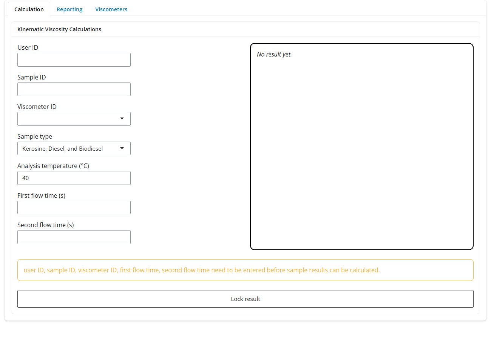
Fill in the operator’s user ID, a sample ID, the viscometer to use (chosen from the registry populated in Step 1), the sample type, the analysis temperature, and the two measured flow times. The result panel on the right updates live as you type – there is no separate “Calculate” button. Here, both flow times are close enough together that the determinability check (ASTM D445-26 11.2.3/12.4.1, comparing the two individually calculated viscosities) passes:
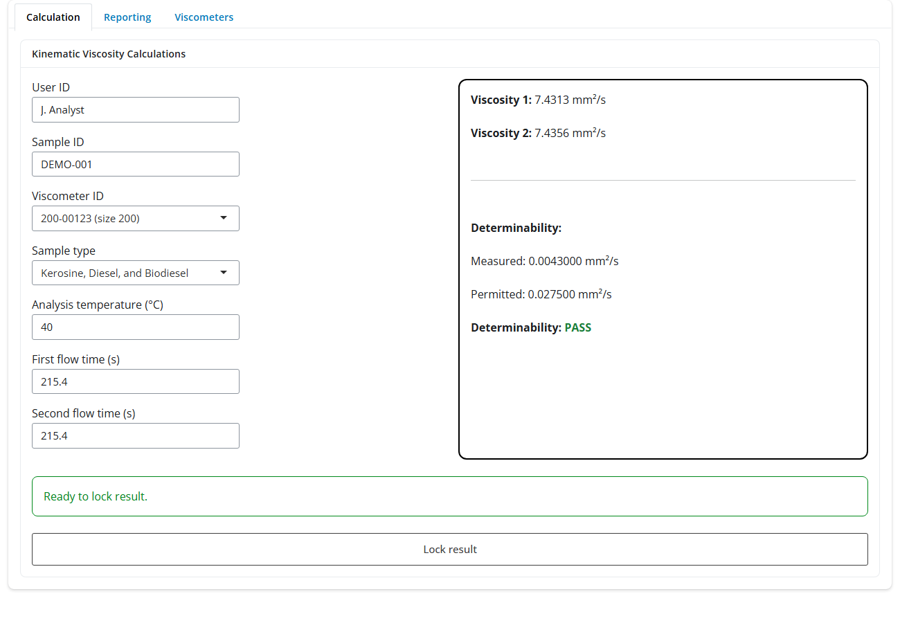
Had the two flow times disagreed by more than the sample type’s determinability limit, this panel would instead show FAIL in red and the message strip below the result panel would recommend cleaning and redrying the viscometer before repeating the measurement, per ASTM D445-26 11.2.3/12.4.1 – the app surfaces this as a warning rather than blocking the result outright, since the operator may still need to record and investigate a failing pair.
Standard reference-sample QA/QC
Selecting sample type Standard Reference Material reveals an additional required field, Expected Value, and unlocks two more checks once it is filled in: a repeatability (r) and reproducibility (R) comparison of the measured result against that known expected value, per the lab’s Characterization Laboratory QA/QC procedure. Unlike the ordinary repeatability/reproducibility checks (which compare two independent measured results and center the limit on their average), this standard check centers the limit on the expected value itself:
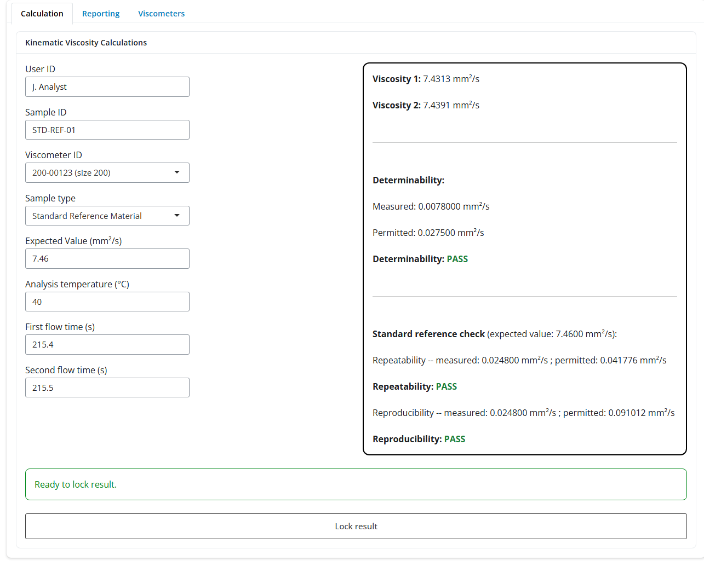
Step 3: Lock the result
Once you are satisfied with the calculated result, click Lock result. Locking clears the sample ID and flow-time fields (ready for the next sample on the same viscometer) and confirms the sample name that was just locked:
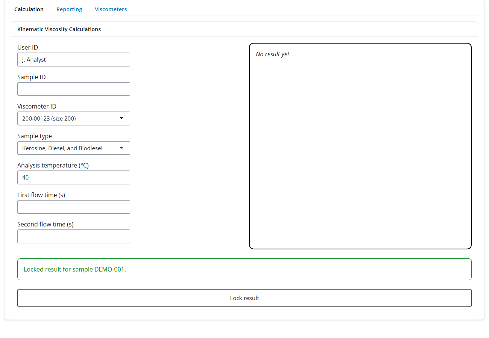
Locking also increments the viscometer’s use counter in the registry, so the Viscometers tab’s “Uses Since Clean” column stays current without a separate manual step.
Step 4: Review locked results
The Reporting tab accumulates every result locked during the current app session into a single table, formatted for a QA record: sample identity, viscometer, both individual flow times and viscosities, the averaged result, a colour-coded QA/QC column, and the operator and timestamp:
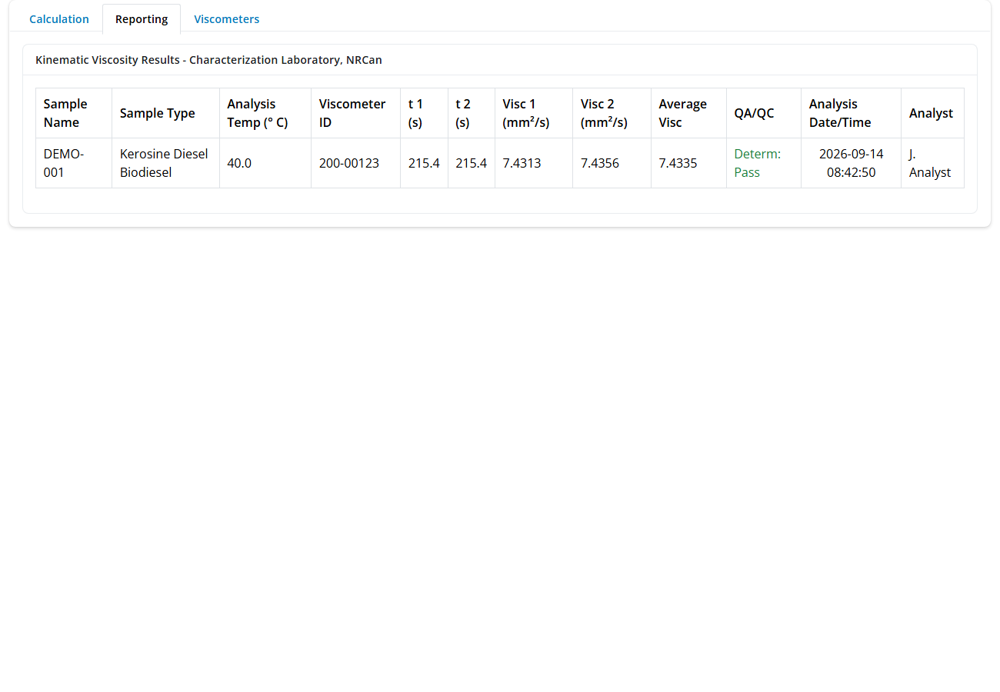
For a standard reference sample, the QA/QC column shows three lines (determinability, r, and R) instead of the single determinability line shown for other sample types, so a reviewer can see all three checks at a glance without opening each row’s original calculation.
Summary
The app tour follows one path through kinvicalc’s three
tabs: register a viscometer (Viscometers), enter and
lock a sample result while reviewing its precision checks
(Calculation), and review the accumulated, reportable
results for the session (Reporting). The underlying
calculations, precision rules, and registry are exactly the functions
documented in the package’s other vignettes and help pages – the app is
a convenience layer over build_sample_result(),
add_viscometer(), update_viscometer_factors(),
and the rest of the exported API, for operators who prefer a form-based
workflow to writing R code directly.
Appendix: viscometer maintenance actions
Section Step 1 above covers adding a brand-new viscometer. The same Viscometers tab also supports three ongoing maintenance actions on a viscometer already in the registry: correcting its calibration factors, marking it as cleaned, and taking it in and out of service via archiving. This appendix walks through each.
Correcting calibration factors
If a calibration factor was mistyped, or the viscometer has been re-certified with new factors, re-enter that viscometer’s size and serial number in the same form used to add it. As soon as the size/serial combination matches an existing registry entry, the action button relabels itself Update Viscometer Factors in place of Add to registry:
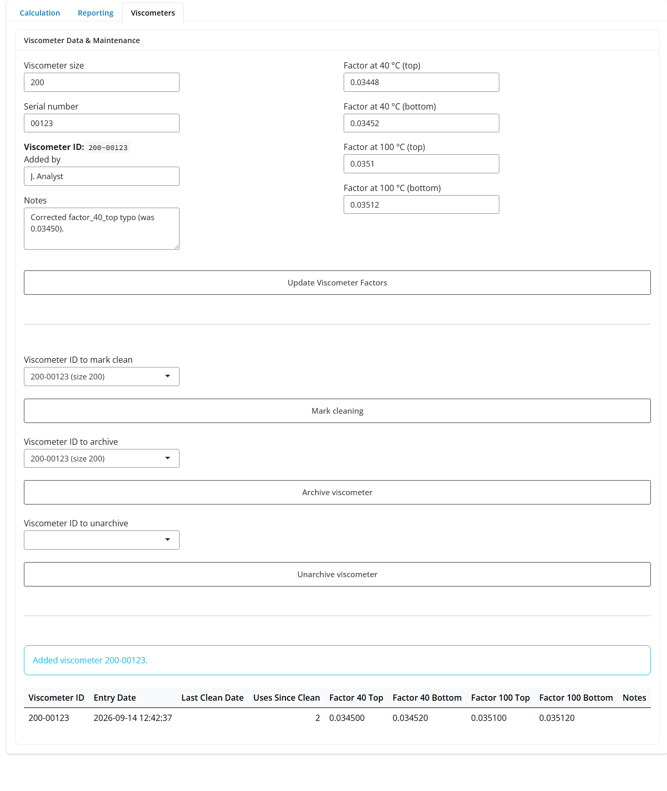
factor_40_top is being corrected from 0.03450 to
0.03448, with a note explaining the change.Clicking it pops a confirmation dialog before anything is written, since this action overwrites the stored factors:
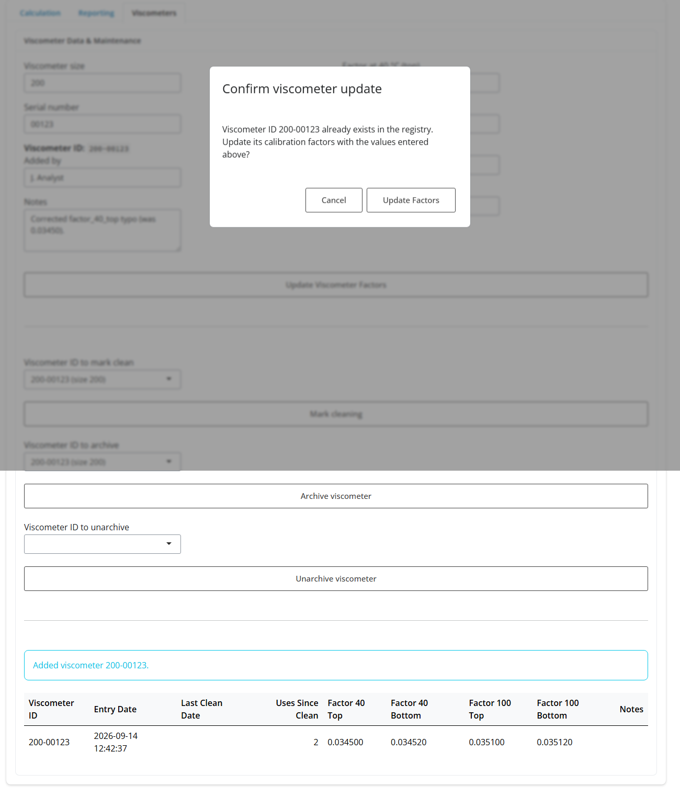
Confirming applies the new factors and records the note. Only the four calibration factors and the notes field are changed – the registry preserves the original entry date and use counters, so the viscometer’s history stays intact:
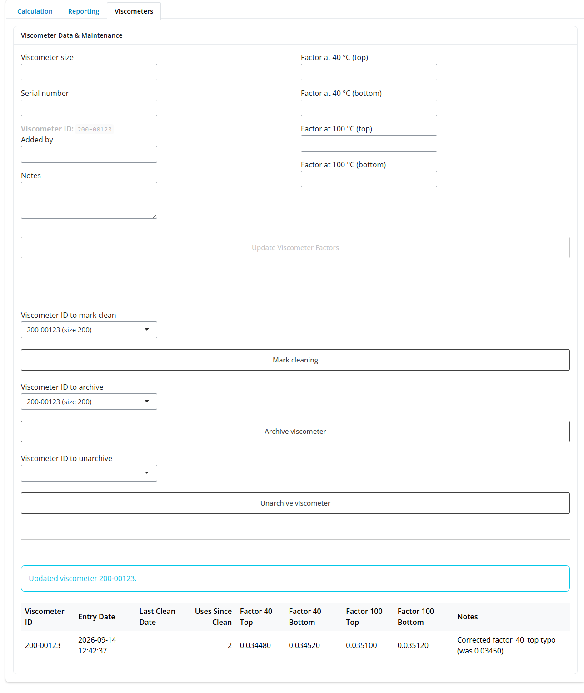
If you leave Notes blank when correcting factors,
kinvicalc writes an auto-generated
"Updated <date> by <updated_by>" note instead,
so a correction is never left untraceable.
Marking a viscometer cleaned
ASTM D445-26 calls for periodic deep cleaning of a viscometer, and the “Uses Since Clean” count in the registry table tracks how many measurements have accumulated since the last clean. Select the viscometer from the Viscometer ID to mark clean dropdown and click Mark cleaning to reset that counter and stamp a new “Last Clean Date”:
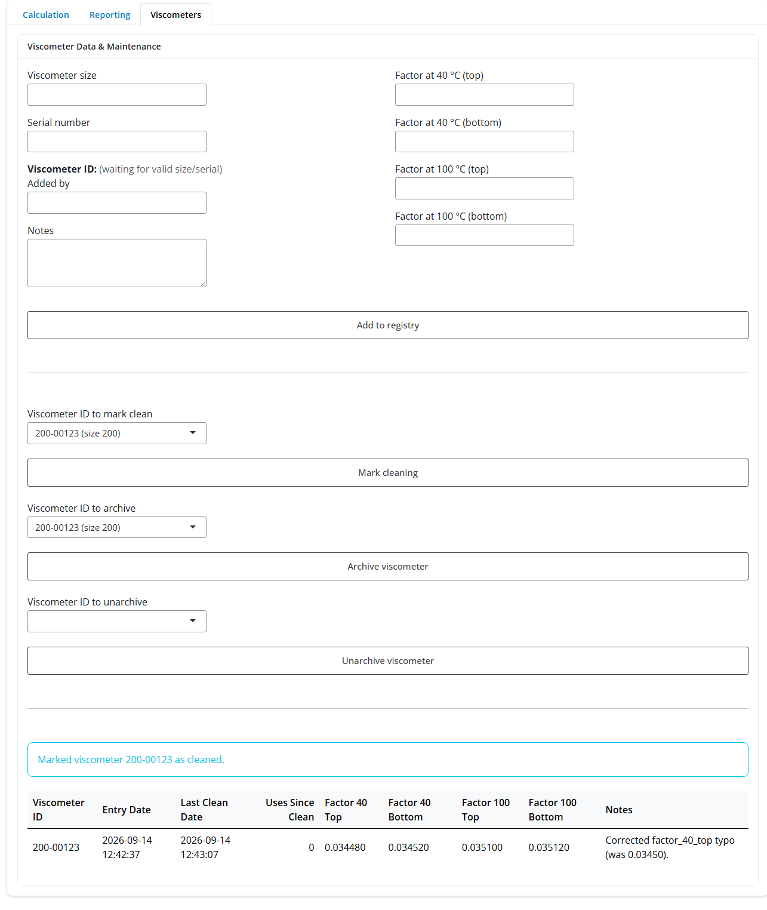
Archiving and unarchiving a viscometer
When a viscometer is retired or taken out of service (for example, damaged or sent out for re-certification), archive it using the Viscometer ID to archive dropdown and Archive viscometer button. Archiving does not delete the viscometer or its history – it only removes it from the active selection lists used elsewhere in the app (such as the Calculation tab’s viscometer dropdown), and it becomes available in the Viscometer ID to unarchive dropdown instead:
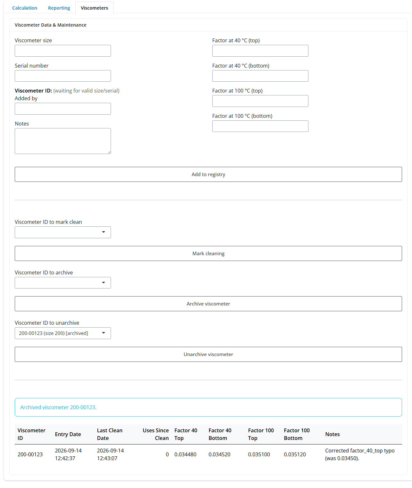
[archived], in the “to unarchive” dropdown.To bring it back into service, select it from Viscometer ID to unarchive and click Unarchive viscometer. This clears the archived status and returns the viscometer to the active dropdowns used for new measurements:
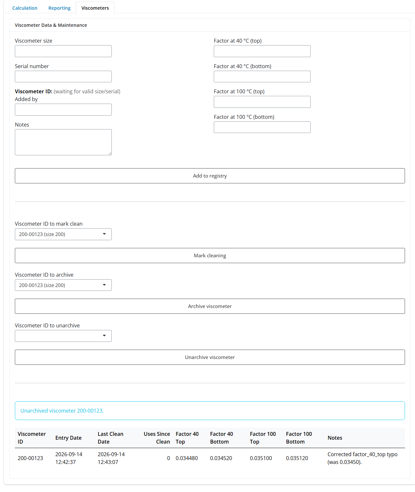
Appendix: standard reference materials and automated pass/fail
Section Standard reference-sample QA/QC above introduces the Standard Reference Material sample type and its Expected Value field. This appendix follows a standard reference sample all the way through to a locked, reported result, and then shows what a failing check looks like, so the two cases can be compared directly.
A standard reference material is a substance with a known, certified
kinematic viscosity (an “expected value”) used to verify that a
viscometer, operator, and procedure are all performing within the
Characterization Laboratory’s QA/QC tolerances – rather than checking
one sample’s internal consistency, it checks the whole measurement
process against a trusted external answer. Because that answer is known
in advance, kinvicalc can automatically calculate whether
the measured result agrees with it closely enough, without the operator
needing to look anything up.
Locking and reporting a passing standard check
Continuing from the passing repeatability/reproducibility check shown earlier, click Lock result just as with any other sample:
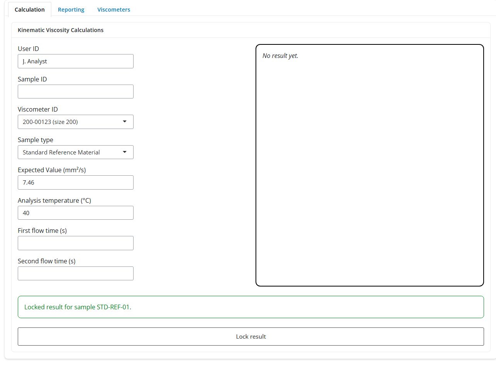
On the Reporting tab, the standard reference sample’s QA/QC column shows three pass/fail lines instead of the single determinability line shown for an ordinary sample, so a reviewer can confirm at a glance that the viscometer and procedure are in control:
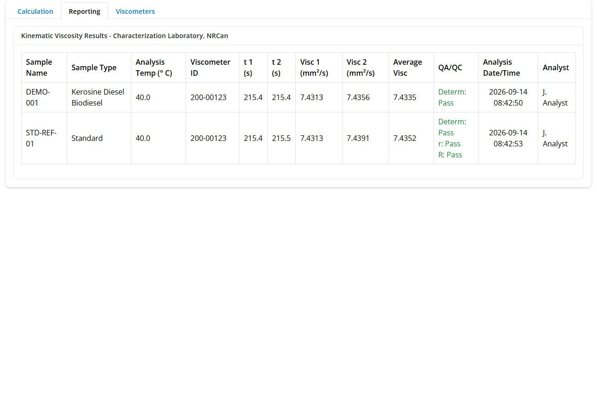
What a failing standard check looks like
The repeatability and reproducibility limits scale with the expected value, so entering an expected value that disagrees substantially with the measured result – for example, from a mislabeled reference standard, or a viscometer drifting out of calibration – produces an automatic FAIL on both checks, shown in red exactly like a failing determinability check:
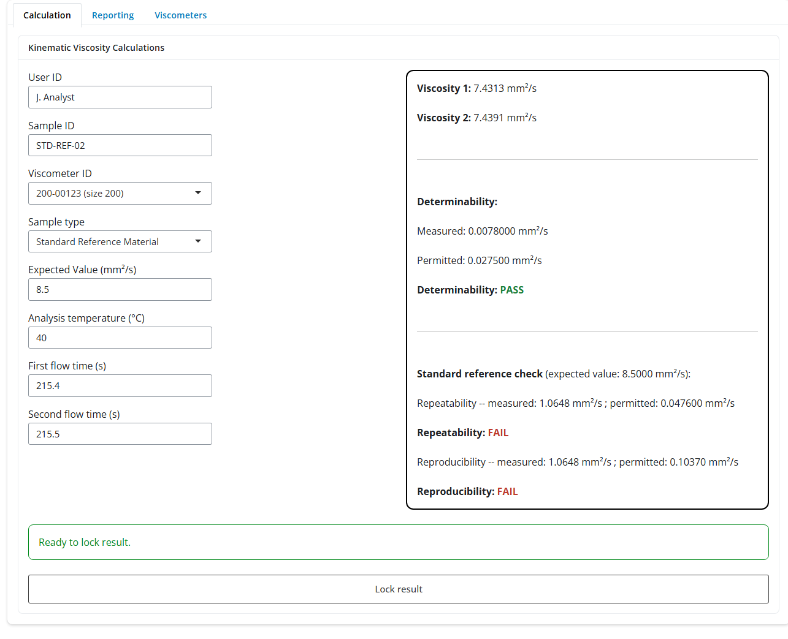
Note that determinability still passed here (the two flow times agree with each other), since it measures a different thing: determinability compares the sample’s own two determinations to each other, while the repeatability and reproducibility checks compare the measured result to the known expected value. A standard reference sample can fail one without the other, and reviewing all three lines together is what makes the distinction visible on the Reporting tab.